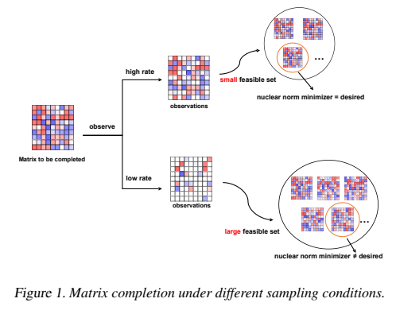
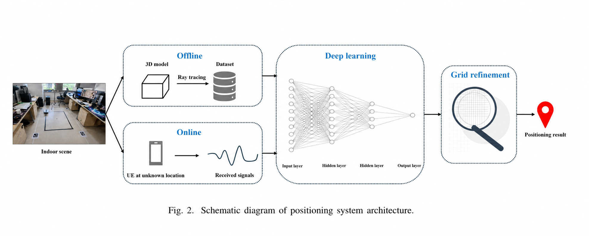
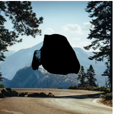

Research
My research interests include machine learning and matrix recovery, channel estimation and localization, and diffusion models for image completion.
Machine Learning & Matrix Recovery
We study how latent low-dimensional structure can be recovered reliably from limited, noisy, or partially observed data. Our work combines low-rank modeling, side information, nonconvex optimization, and statistical learning theory to improve sample efficiency and robustness.

Channel Estimation & Localization
We design estimation and inference methods for millimeter-wave and reconfigurable wireless systems. Current interests include angular and delay estimation, tensor and subspace methods, movable antennas, and localization using direct and reflected propagation paths.

Diffusion Models & Image Completion
We study diffusion models for image completion, with an emphasis on reconstructing missing or corrupted regions while preserving the known visual context. Our interests include mask-guided diffusion, text-guided inpainting, structural priors, and efficient restoration sampling.
